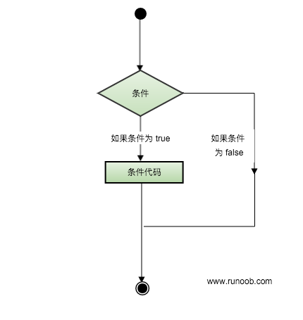

C教程
C教程C判断
判断结构要求程序员指定一个或多个要评估或测试的条件，以及条件为真时要执行的语句（必需的）和条件为假时要执行的语句（可选的）。
C 语言把任何非零和非空的值假定为 true，把零或 null 假定为 false。
下面是大多数编程语言中典型的判断结构的一般形式：
判断语句
C 语言提供了以下类型的判断语句。点击链接查看每个语句的细节。
| 语句 | 描述 |
| if 语句 | 一个 if 语句 由一个布尔表达式后跟一个或多个语句组成。 |
| if...else 语句 | 一个 if 语句 后可跟一个可选的 else 语句，else 语句在布尔表达式为假时执行。 |
| 嵌套 if 语句 | 您可以在一个 if 或 else if 语句内使用另一个 if 或 else if 语句。 |
| switch 语句 | 一个 switch 语句允许测试一个变量等于多个值时的情况。 |
| 嵌套 switch 语句 | 您可以在一个 switch 语句内使用另一个 switch 语句。 |
? : 运算符(三元运算符)
Exp1 ? Exp2 : Exp3;
其中，Exp1、Exp2 和 Exp3 是表达式。请注意，冒号的使用和位置。
? 表达式的值是由 Exp1 决定的。如果 Exp1 为真，则计算 Exp2 的值，结果即为整个 ? 表达式的值。如果 Exp1 为假，则计算 Exp3 的值，结果即为整个 ? 表达式的值。